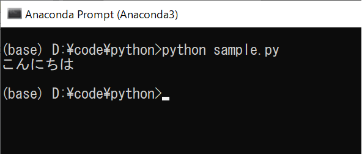
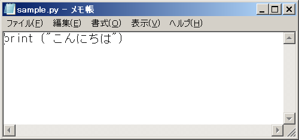
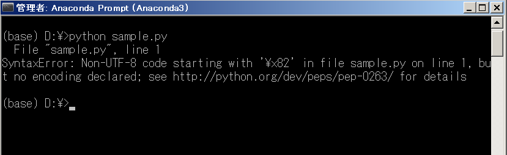

現在のPythonバージョンでは、ファイルに記載されるPythonプログラムはUTF-8文字コードをデフォルトの文字コードとして処理します。PythonファイルがUTF-8以外の文字コードで記述されている場合は、プログラム実行時のデコードエラーを回避するために使用された文字コードを次のように指定する必要があります。この記事は、日本語、ヘブライ語、韓国語、中国語など、英語以外の言語を使用するオペレーティングシステムを搭載したコンピューターを使用している方に特に役立ちます。
UTF-8文字コードで保存されてPythonファイルの文字コードの設定
Pythonは、Pythonプログラムを格納するファイルを、ファイルがUTF-8文字コードで記述されているデフォルトで処理するため、UTF-8文字コードで記述および保存されたPythonファイルでは、Pythonに文字コードを配置する必要はありません。ファイル。
たとえば、次のPythonプログラムをUTF-8文字コードで記述して保存します。
print("こんにちは") |
このpythonファイルに記述されたプログラムを実行しようとすると、次の出力が表示され、pythonがプログラムを正常に処理したことが示されます。

* Pythonファイルでプログラムを作成、保存、および実行する方法については、Pythonプログラムの作成、保存と実行する方法の記事を確認してください。
ご覧のとおり、UTF-8文字コードを使用してファイルにプログラムを記述したため、処理されるデフォルトファイルを含むPythonがUTF-8文字コードで記述されたため、文字のデコードに問題はありませんでした。そして、プログラムは正常に処理されました。
UTF-8文字コード以外で保存されてPythonファイルの文字コードの設定
UTF-8文字コード以外で記述および保存されたPythonファイルではプログラムの実行時にこれらの文字コードをデコードできるようにするには、文字コードをpythonファイルに入れる必要があります。
特に日本、土井タイ、韓国、中国など英語以外の使用してオペレーティングシステムを搭載したコンピュータに要注意です。
Pythonプログラムストレージファイルで使用される文字コードを設定するための構文は次のとおりです。
# coding : 文字コード名
若しくは# coding = 文字コード名
例えば：
# coding: shift_jis
尚Linux環境では、Pythonプログラムファイルの最初の行の最初の行に**#!/usr/bin/env python3**が含まれている場合は、後半の書き方を使用します。
日本語を使用したPythonファイルが次のShift_JIS文字コードで記述されている例を見てみましょう。
print ("こんにちは") |

このpythonファイルを実行しようとすると、ファイルの書き込みに使用された[Shift_JIS]文字コードを配置しないため、pythonはそれをデコードできず、エラーが発生します。
SyntaxError: Non-UTF-8 code starting with '\x82' in file sample5-2.py on line 1, but no encoding declared; see http://python.org/dev/peps/pep-0263/ for details |

このエラーを解決するには、このPythonファイルの最初の行に次のコード行を追加して、このPythonプログラムストレージファイルで使用される文字コードを[Shift_JIS]に設定しましょう。
# coding: shift_jis
上記のpythonファイルには次の内容が含まれます。
# coding: shift_jis |

上記のファイルを保存した後、プログラムを実行しようとします。その結果、プログラムは次のようにスムーズに実行されます。

上記のように、Pythonプログラムを作成してファイルに保存する場合、特別な理由がない限り、UTF-8文字コードを使用します。
また、特別な理由でUTF-8以外の文字コードを使用してPythonファイルを作成および保存する場合は、そのファイルで使用される文字コードを設定する必要があります。
Pythonの文字コード 一覧
Pythonファイルで使用される文字コードを設定するときに使用される一般的な文字コードの一覧は次のとおりです。
| 文字コード名 | 別の呼び方 | IANA登録名 |
|---|---|---|
| ascii | 646, us-ascii | ASCII |
| cp932 | 932, ms932, mskanji, ms-kanji | CP932 |
| euc_jp | eucjp, ujis, u-jis | EUC-JIS |
| iso2022_jp | csiso2022jp, iso2022jp, iso-2022-jp | ISO-2022-JP |
| shift_jis | csshiftjis, shiftjis, sjis, s_jis | Shift_JIS |
| utf_8 | U8, UTF, utf8 | UTF-8 |
まとめ
上記では、KiyoshiがPythonプログラムを格納するファイルで使用される文字コードを設定する方法を示しました。
次のレッスンでは、Pythonの知識について詳しく学びましょう。
HOME>> python基礎 初心者向けのpython学習>>03. pythonの基礎知識